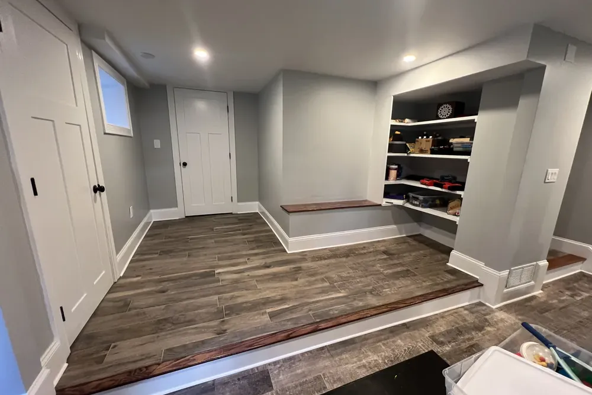
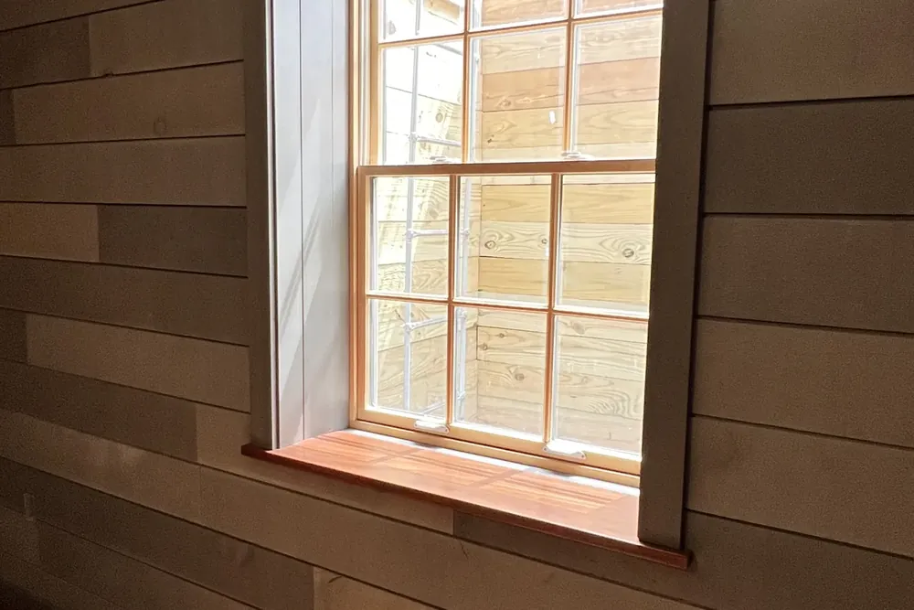
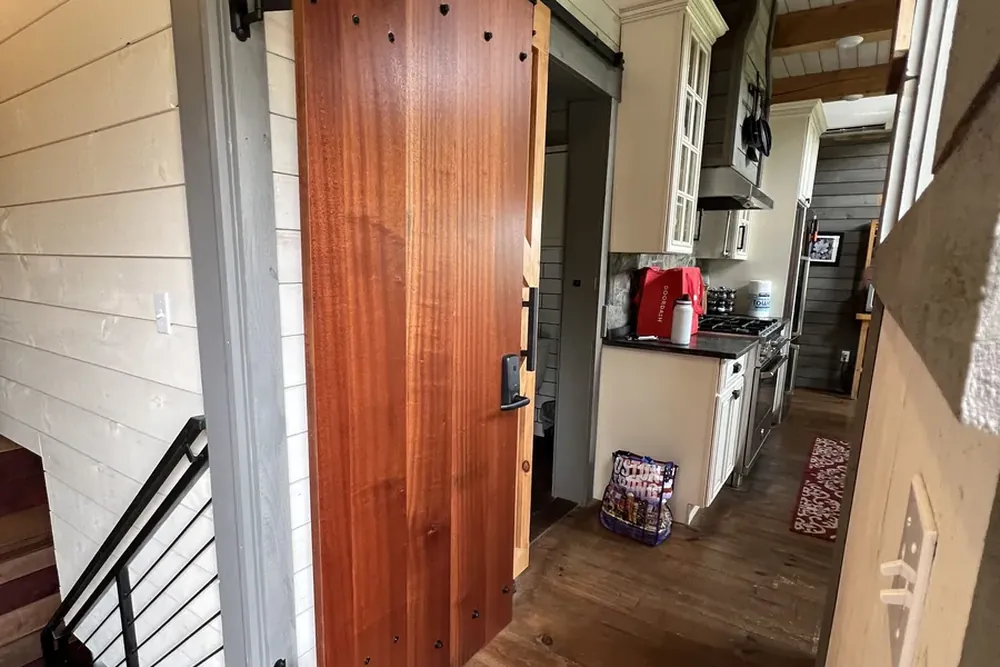
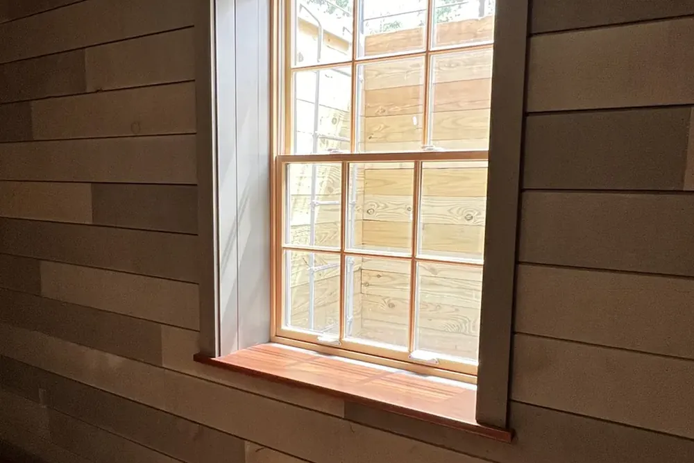
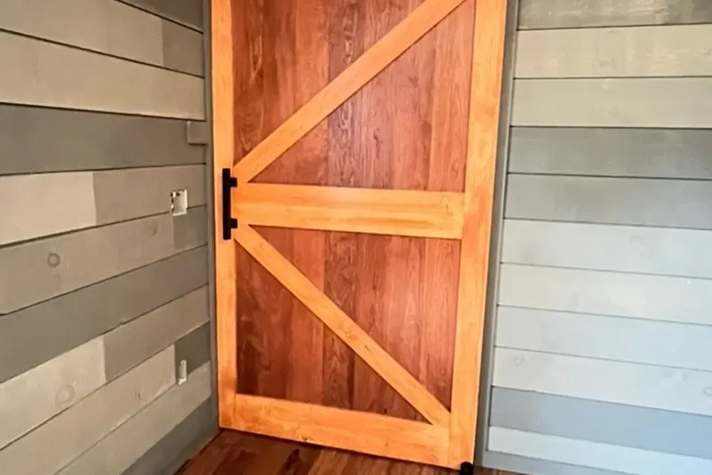
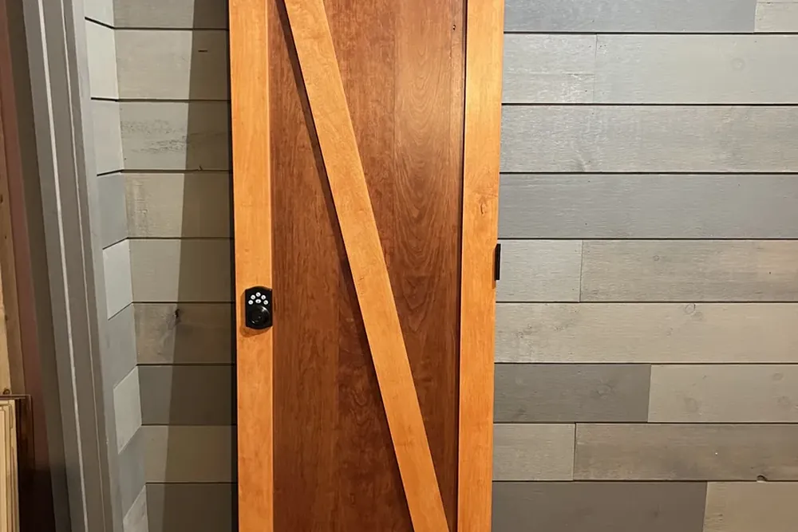
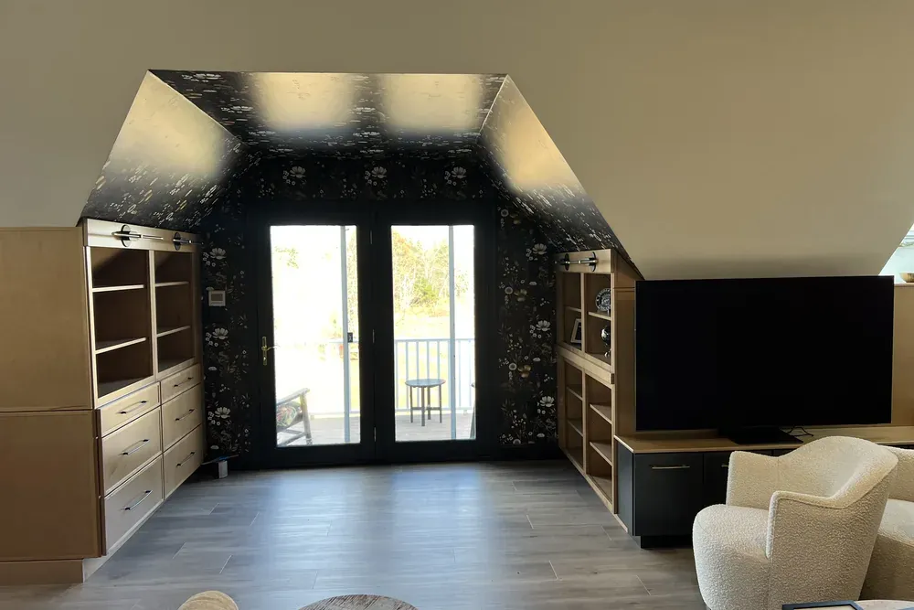

Built-ins and finish carpentry in Weston, MA
Built-ins and finish carpentry Weston MA homes deserve, built to fit the walls you actually have
Finish carpentry Weston MA homeowners can count on: DeFaria Construction builds built-in bookcases, window seats and mudroom benches, and installs trim, wainscoting, doors and cabinets, all scribed to the real walls and floors of Middlesex County homes.
Our work
Finish carpentry from a real DeFaria project
See how DeFaria finish work comes together on site. A Weston built-in follows the same order: measure, build, scribe to the wall, then finish.
Get a Free Estimate
Local search focus
Finish carpentry for Weston homes, from the first measurement to the last coat of paint.

Across Weston Center, Silver Hill, Kendal Green, Case's Corner and Hastings, Weston ranges from First Period and colonial homes to grand estates, Queen Anne Victorians and contemporary custom homes on large wooded lots. Walls in a Weston house are rarely flat and floors are rarely level, so every built-in and every run of trim is measured, scribed and fitted on site.
This page is for Weston homeowners planning built-ins, trim or wall paneling. It covers local homes, real 2026 prices, materials, how the work runs and how to compare carpenters.
- Clear estimate conversations before the project starts.
- Direct communication with the homeowner from walkthrough to final walkthrough.
- Local coverage across Weston and the wider Middlesex County area.
Large homes
Libraries, offices and mudrooms for Weston homes

Weston homes often have room for larger pieces: full library walls, home offices with desks and cabinets, and long mudroom runs with lockers and benches. At that size, layout, lighting and outlets need to be planned before the first box is built.
Stain-grade hardwood is more common in these rooms, and it changes both the price and the finishing schedule, so it is decided at the design stage.
- Full library walls and home offices
- Lighting and outlets planned into the drawing
- Paint-grade or stain-grade decided up front
The scope
What finish carpentry covers in a Weston home
In Weston, First Period and colonial homes on large wooded lots, some dating to the early 1700s, often add structural and access constraints.
- Home office walls with desk, shelves and cabinets.
- Matching trim in older homes and additions.
- Paint or stain finish by the same team.
Built-ins, trim and cabinet installation in Weston usually do not need a building permit, but anything that moves a wall, an outlet or plumbing does, and that runs through the Town of Weston Building Department. Work on an existing owner-occupied home is done under a Massachusetts Home Improvement Contractor registration.
Cost
How much do built-ins and finish carpentry cost in Weston?

Plan on roughly $4,000 to $15,000 for a pair of built-in bookcases in Weston. Trim is priced by the opening or the foot: about $250 to $600 per door or window casing and $10 to $25 per linear foot of crown molding.
- Matching old trim profiles that are no longer stock.
- Wainscoting height and panel style, about $40 to $100 per linear foot of wall.
- Crown size and the number of corners.
- Finish: painted on site or stained.
In Weston, First Period and colonial homes on large wooded lots, some dating to the early 1700s, often add structural and access constraints, and matching the existing profiles is priced up front instead of discovered on install day.
DeFaria gives a fixed, itemized Weston estimate after measuring the room, so the price follows the real piece and the real walls.
Process
How a Weston built-in or trim project runs, step by step

Every Weston finish carpentry job is drawn and priced before any wood is cut.
- Walkthrough, measurements and a conversation about style and use.
- Drawing or clear sketch with dimensions, then a fixed estimate.
- Material selection: paint-grade or stain-grade, hardware, finish.
- Shop work: boxes, face frames, doors and drawers built and fitted.
- Installation, scribed to walls and floors.
- Caulk, fill, prime and paint or stain.
- Final walkthrough and hardware adjustments.
When a Weston built-in needs a new outlet, a moved switch or a wall opened, DeFaria coordinates the permit with the Town of Weston Building Department before installation.
Most Weston built-ins take one to three weeks from approved design to finished, with only part of that time spent in your home.
Materials
Wood and materials for Weston built-ins and trim

A Middlesex County built-in has to handle dry winter heat and humid summers, so the wood is chosen for stability first.
- Poplar for smooth, stable painted trim and face frames.
- MDF for panels and wainscoting, kept away from wet floors.
- Maple and birch plywood for flat boxes and shelves that do not sag.
- Oak, cherry or walnut for stain-grade pieces.
From Weston Center to Kendal Green, First Period and colonial homes on large wooded lots, some dating to the early 1700s, often add structural and access constraints, which is exactly why the finish is specified for the home rather than a catalog.
When to build
Signs a Weston home is ready for built-ins or new trim

A few clear signs a Weston room needs finish carpentry:
- Bare walls on each side of a fireplace or window.
- Shoes, coats and bags pile up at the back door.
- Trim is cracked, painted over many times or mismatched.
- A remodel left new rooms that do not match the old trim.
- You work from home and need a real desk and shelving.
They are common across Weston, from Weston Center to Kendal Green.
Built-ins
Built-in bookcases, benches and window seats for Weston homes
Built-ins are the most requested finish carpentry project in winter, and for good reason: they add storage, frame a fireplace or a window, and make a Weston room feel designed instead of furnished.
We build the boxes square, scribe them to walls and floors that are never perfectly flat in older homes, and finish them with face frames, trim and paint so they look original to the house.
In Weston, homeowners near Weston Center, Silver Hill and Kendal Green get carpentry measured and built for their room, not a stock cabinet size.
Around Weston, that includes Weston Center, Silver Hill, Kendal Green, Case's Corner and Hastings, each planned on its own conditions.
- Bookcases on each side of a fireplace or around a doorway.
- Window seats with drawers or lift-up storage below.
- Mudroom benches with cubbies, hooks and shoe storage.
- Home office walls with desk, shelves and closed cabinets.
Trim
Casing, baseboard and crown molding in Weston houses
In older Weston homes trim has to deal with walls that are out of plumb, jambs that are not flush and floors that rise and fall. Tall baseboard with a cap and shoe hides an uneven floor; back band adds depth to plain casing.
Crown molding is coped at inside corners so the joints stay closed through the heating season.
- Casing and wood stools on windows.
- Door casing with back band or plinth blocks.
- Tall baseboard with cap and shoe.
- Crown, chair rail and picture rail.
Older homes
Matching original trim in older Weston homes
Weston ranges from First Period and colonial homes to grand estates, Queen Anne Victorians and contemporary custom homes on large wooded lots. When a remodel removes a wall or adds a window, the new trim has to match the old or the patch shows forever.
We pull a sample and build the profile up from stock pieces when possible; when needed, matching profiles can be milled to order. The goal is that nobody can tell where the old house ends and the new work begins.
Wall paneling
Wainscoting, shiplap and accent walls in Weston
A Weston dining room, stair hall or mudroom can change completely with paneling: raised or flat panel wainscoting, board and batten, shiplap or beadboard sealed for humidity in a bathroom.
The layout is planned around windows, outlets and switches so the panels land evenly, then everything is caulked, filled and painted.
For Weston homes from Weston Center to Kendal Green, the carpentry is built to look original to the house.
- Raised or flat panel wainscoting in dining rooms and stair halls.
- Board and batten in mudrooms, entries and bedrooms.
- Shiplap walls and ceilings.
- Beadboard in bathrooms, sealed for humidity.
Doors
Interior doors, barn doors and pocket doors in Weston

Doors are used dozens of times a day, so they have to hang right. We replace hollow-core doors with solid ones, build custom doors and install sliding barn doors where a swinging door does not fit.
The custom barn doors in our photos were built in-house and hung for a recent DeFaria remodel.
Cabinets
Cabinet and vanity installation in Weston

DeFaria installs kitchen, bathroom and laundry cabinets and vanities supplied by you or ordered through us. That means finding the high point of the floor, shimming and fastening into studs, scribing fillers and end panels, and drilling hardware with a jig.
Crown, light rail and toe kicks are installed tight, so a Weston kitchen looks finished the day the counters go in.
Licensing
Hiring a licensed finish carpenter in Weston

Work on an existing owner-occupied home of one to four units in Massachusetts generally requires a Home Improvement Contractor registration, and anything structural needs a Construction Supervisor License. Registration also gives homeowners access to the state guaranty fund if something goes wrong.
Before you hire any carpenter in Weston, ask for both, plus proof of insurance. DeFaria Construction is licensed and insured, and BBB Accredited with an A+ rating.
For Weston homes from Weston Center to Kendal Green, the carpentry is built to look original to the house.
Winter
Why winter is the season for built-ins in Weston
A Weston built-in is a natural winter project: most of the building happens in the shop, the install takes a few days, and the house stays heated and livable the whole time.
Many winter projects combine carpentry with fresh interior paint or a finished basement, so the whole room is done at once.
One team
Carpentry, paint and finish from one Weston team
DeFaria started as a carpentry company, and the legal name is still DeFaria Carpentry, Inc. The same team that builds a Weston built-in can also patch the wall around it, run the trim and paint it, so there is one schedule and one price.
That avoids the gap between a carpenter who leaves and a painter who has to fix what was left behind.
Home office
Home office built-ins for Weston homes
Working from home in Weston often means an office squeezed into a guest room. A wall of built-ins with a desk, file drawers and shelves can hold everything a freestanding desk and three bookcases would, in half the floor space.
Lighting under the upper cabinets and outlets inside the desk keep cords off the floor and the surface clear.
- Desk at the right height with cable grommets.
- Closed cabinets for files and equipment.
- Outlets, network and lighting planned in the drawing.
- Shelving above for books and binders.
Mudrooms
Designing a mudroom that works through a Weston winter
A New England mudroom handles snow boots, wet coats and sports gear for half the year. The details that matter are a bench at sitting height, a boot area that can get wet, hooks at two heights for adults and kids, and closed cubbies above for hats and gloves.
Materials are chosen for water and wear: a hard enamel finish, moisture-resistant panels near the floor and durable flooring under the bench.
- One cubby or locker per family member.
- Bench at sitting height with boot space below.
- Hooks at adult and kid heights.
- Washable enamel and moisture-resistant panels.
Stairs
Stair treads, railings and balusters in Weston homes
Stairs are finish carpentry that gets used every day. Common projects are replacing carpeted stairs with hardwood treads and painted risers, swapping a wobbly railing for a solid one, and installing new balusters and newel posts.
Railings and guards have to meet the building code for height and spacing, so stair work is measured carefully and, where structure changes, permitted.
Ceilings
Coffered ceilings, beams and ceiling paneling
Beamed and coffered ceilings are a finish carpentry project that changes a whole room. We check joist direction, lighting and ceiling height first, then lay out the grid so it lines up with windows and the fireplace.
Recessed lights can be planned inside the coffers so the ceiling and the lighting are designed together.
Closets and pantries
Built-in closets, pantries and linen storage
Older Weston homes rarely have enough closet space. Built-in closet systems with drawers, shelves and double hanging rods, a pantry cabinet in a dead corner of the kitchen or a linen tower in the hall can add storage without moving walls.
Because they are built to the exact space, they use the corners and the full height that store-bought systems leave empty.
Value
Built-ins or furniture: which makes more sense?
Freestanding furniture is cheaper up front and moves with you. Built-ins cost more but use every inch of an awkward wall, look original to the house and stay with the home when you sell.
They make the most sense in alcoves, around fireplaces and windows, under stairs and in rooms where a standard bookcase leaves gaps. For a quick fix on a regular wall, furniture can be the better buy, and we will say so.
Project photos
Real DeFaria built-ins, doors and trim
Real photos from DeFaria jobs, not stock images, so Weston homeowners can see the carpentry before requesting an estimate.
Areas covered
Built-ins and finish carpentry across Weston neighborhoods
DeFaria Construction builds and installs finish carpentry across Weston and nearby Middlesex County towns, with enough local context on this page to decide whether we are the right fit before you call.
From Weston Center to Hastings, Weston homeowners get built-ins and trim built to fit the walls and the style of their house.
- Weston Center
- Silver Hill
- Kendal Green
- Case's Corner
- Hastings
Reviews
What Weston homeowners say about DeFaria Construction
DeFaria Construction has a 5.0 rating from 15 reviews on Google. See all reviews on Google.
I have work with Defaria Carpenter in my project, and they give me the best experience I never have with another contractor. Thank for the great job you guys done at my house.
DeFaria Construction completed a full remodel of our master bathroom to our great satisfaction. Demolition down to the studs and subfloor was completed quickly. Plumbing changes and waterproof underlayment were quickly installed. Tiling of the floor and shower were beautifully done. Installation of…
Excellent work! I’m extremely happy with the results of my bathroom. Defaria Construction did an amazing job and was very professional, careful, and detail-oriented throughout the entire project. The workmanship and finishing touches were outstanding. You can really tell when a company takes pride…
Experience
Why this Weston page is built for real homeowners, not just keywords.
DeFaria Construction serves homeowners and businesses throughout Middlesex County and Essex County as a local, owner-run builder. With hands-on involvement from Luiz DeFaria and A+ BBB credibility, the Weston built-ins page is written around real measuring, building and fitting work, not a town name dropped into a template.
DeFaria Construction is a licensed and insured local contractor with an A+ BBB rating and verified customer reviews, and every Weston project is owner-led by Luiz DeFaria from the first walkthrough to the final one.
"Excellent work! I’m extremely happy with the results of my bathroom. Defaria Construction did an amazing job and was very professional, careful, and detail-oriented throughout the entire project. The workmanship and..."
Allanderson Amorim, Google review
Read reviews left by Weston-area clients: Read DeFaria Construction reviews on Google. BBB Accredited Business with an A+ rating since March 2024, verify on BBB.
The goal is to help someone searching for Weston built-ins and finish carpentry understand the scope, the neighborhoods covered and how to start a direct conversation before requesting a free estimate.
Call (617) 893-2221 for a free estimateFAQ
Common questions about built-ins and finish carpentry in Weston
How much do built-ins cost in Weston?
A pair of built-in bookcases often runs about $4,000 to $15,000, a window seat with storage about $2,500 to $7,000 and a mudroom bench with cubbies about $3,000 to $9,000. DeFaria gives a fixed, itemized estimate after measuring the room.
Do I need a permit for built-ins or trim in Weston?
Built-ins, trim and cabinet installation usually do not need a building permit. Anything that moves a wall, an outlet or plumbing does, and that goes through the Town of Weston Building Department.
How long does a built-in take?
Most built-in bookcases, window seats or mudroom benches take one to three weeks from approved design to installed and painted. Much of the work happens in the shop, so the time in your Weston home is shorter.
Can you match the old trim in my Weston house?
Usually, yes. Many older homes have casing and baseboard profiles that are no longer stock. We build them up from standard pieces or have profiles milled so new work matches the rest of the house.
Do you install cabinets and vanities I bought myself?
Yes. DeFaria installs kitchen, bathroom and laundry cabinets and vanities supplied by you or ordered through us, including scribing fillers and panels, setting crown and leveling bases for the countertop.
Do you paint the built-ins too?
Yes. We fill, caulk, prime and paint or stain every piece, and our interior painters can refresh the rest of the room in the same visit.
Is DeFaria Construction licensed and insured?
Yes. DeFaria Construction (DeFaria Carpentry, Inc.) is licensed and insured, BBB Accredited with an A+ rating, and every Weston project is owner-led by Luiz DeFaria. Carpentry is where the company started.
Do you build stain-grade built-ins for a Weston library or office?
Yes. Oak, cherry and walnut are common choices for stained pieces. They cost more than paint-grade poplar or MDF, and both options are priced in the estimate.